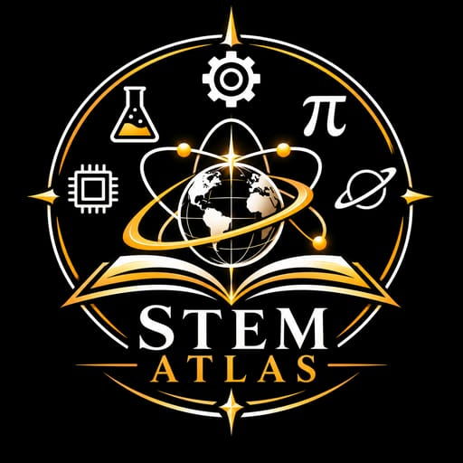

Science
How the natural world works, from atoms to galaxies.

STEM AtlasA free digital library
Books on science, technology, engineering and mathematics, shelved in one quiet place for people who love figuring things out.
The Reading Room
Every book is free. Read it right here in your browser, or download the PDF.
Dusting off the shelves…
About
STEM Atlas is a library of books for curious minds in science, technology, engineering and mathematics. New titles are added to the shelves over time, and every one can be read online or kept as a PDF.
How the natural world works, from atoms to galaxies.
The code, tools and machines that shape modern life.
Designing and building things that solve real problems.
The language that sits underneath everything else.
Tools
STEM Atlas has a built-in scientific calculator carved from the same wood as the library. It works fully inside your browser, with no downloads and no sign-ups.
The Writer